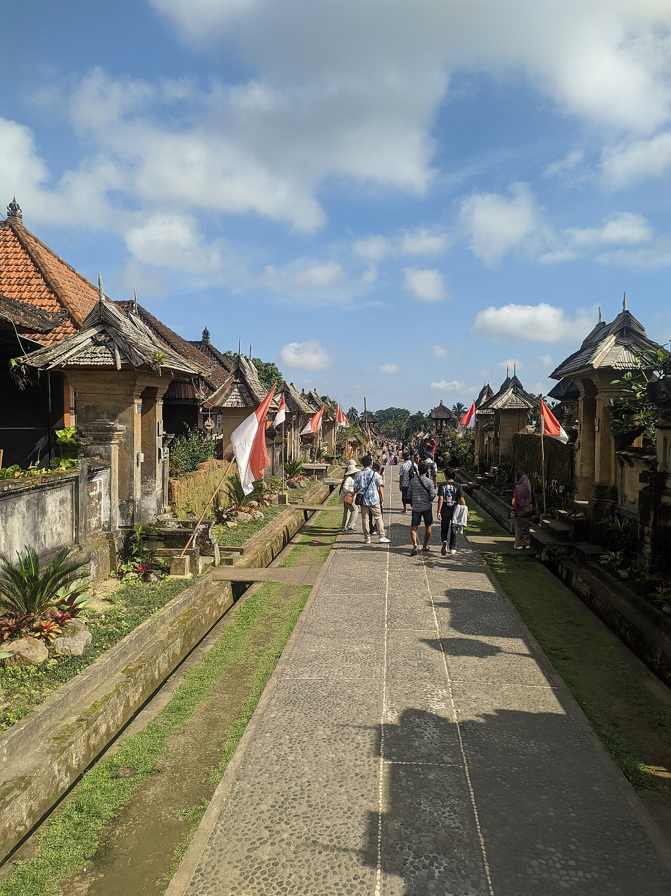

Sebelum datang
Pakaian
Pakai yang sopan dan boleh kotor. Bawa topi, karena sawah hampir tanpa peneduh.
Uang
Warung dan kios warga umumnya lebih mudah dibayar tunai. Tiket masuk Rp 15.000, anak-anak Rp 7.500.
Adat
Upacara bukan pertunjukan. Tanya pemandu sebelum masuk area pura atau memotret warga.
Jam buka
Setiap hari pukul 07.00 sampai 18.00. Loket tutup saat hari raya desa.
Alamat
Jl. Subak Asri No. 8, Desa Tirta Asri, Kabupaten Sukamaju.
Naik mobil atau motor
Sekitar 1 jam 15 menit dari pusat Kota Sukamaju (38 km). Parkir luas tersedia di gerbang desa.
Naik angkutan umum
Naik bus jurusan Sukamaju ke Terminal Asri, lalu lanjut ojek desa sekitar 15 menit, Rp 20.000.
Sinyal dan listrik
Sinyal seluler cukup di jalan utama, tetapi lemah di sawah. Wi-Fi tersedia di balai wisata.
Jam buka
| Tempat | Hari | Jam | Sekarang |
|---|
Kapan sebaiknya datang
- Desember sampai Februari
Musim tanam
Sawah penuh air dan bercermin. Sering hujan pada sore hari, jadi bawa jas hujan.
- Maret sampai April
Sawah menghijau
Warna paling segar untuk berfoto, dan hujan mulai jarang.
- Mei sampai Juni
Panen pertama
Sawah menguning, dan tamu boleh ikut memanen bersama petani.
- Juli sampai November
Kemarau
Langit cerah dan jalan kering, paling nyaman untuk bersepeda.
Festival Panen Tirta Asri
12 sampai 14 Juni 2027. Arak-arakan hasil bumi, pertunjukan tari, dan pasar makanan di jalan utama desa. Pesan penginapan sejak jauh hari.
Rencana sesuai kondisi
Situs ini tidak menampilkan ramalan cuaca. Pilih kondisi pada hari Anda datang, dan lihat apa yang sebaiknya dilakukan.
Peta desa
Peta skematis, bukan skala. Pilih nomor di peta atau di daftar untuk melihat keterangannya.
Pertanyaan pengunjung
Apakah harus pesan dulu?
Untuk jalan-jalan santai tidak perlu. Untuk kelas dan menginap, pesan minimal tiga hari sebelumnya agar warga bisa bersiap.
Aman untuk anak kecil dan orang tua?
Jalan utama desa rata dan mudah dilalui. Pematang sawah sempit dan licin, jadi pemandu akan memilih jalur yang lebih ringan bila diminta.
Bagaimana kalau hujan?
Kegiatan sawah dipindah ke pagi berikutnya atau diganti kelas membatik dan menganyam di sanggar tanpa biaya tambahan.
Bisa bayar dengan QRIS?
Loket tiket dan Warung Bu Sari menerima QRIS. Kios kecil dan ojek desa hanya menerima tunai.
Bisa untuk rombongan sekolah?
Bisa, sampai 60 orang per hari. Kirim jadwal dan jumlah peserta lewat formulir kunjungan supaya pengelola bisa menyiapkan pemandu.
Bagaimana cara memesan dan membayar?
Pilih paket di halaman aktivitas atau rumah di halaman menginap, masukkan ke keranjang, lalu isi data pemesan. Bayar uang muka 30% dan konfirmasi lewat WhatsApp.
Bagaimana kalau ingin membatalkan?
Buka Cek booking, isi kode dan nomor telepon, lalu pilih Batalkan booking. Lebih dari tiga hari sebelum datang, uang muka kembali penuh.
Tidak ada pertanyaan yang cocok. Tulis pertanyaan Anda di formulir di bawah.
Tanya pengelola
Tidak menemukan jawabannya? Tulis pertanyaan Anda. Pengelola membacanya di admin dan membalas lewat kontak yang Anda tulis. Di demo ini pertanyaan hanya tersimpan di peramban.
Tiket dan biaya
| Jenis | Harga | Catatan |
|---|---|---|
| Dewasa | Rp 15.000 | Sudah termasuk peta desa |
| Anak 5 sampai 12 tahun | Rp 7.500 | Di bawah 5 tahun gratis |
| Parkir motor | Rp 3.000 | Sekali masuk |
| Parkir mobil | Rp 8.000 | Sekali masuk |
| Parkir bus | Rp 25.000 | Bus sedang, lewat jalur selatan |
| Pemandu tambahan | Rp 100.000 | Per 3 jam, untuk 10 orang |
Yang sebaiknya dibawa

- Topi dan tabir surya
- Baju ganti dan kantong plastik untuk baju basah
- Sandal yang mudah dilepas
- Losion antinyamuk bila menginap
- Uang tunai secukupnya
- Botol minum, karena isi ulang gratis di balai wisata
Jangan bawa pengeras suara. Desa ini paling nikmat saat tenang.
Fasilitas di desa
- Balai wisataLoket, loker, Wi-Fi, dan toiletGerbang desa
- MusalaTerbuka untuk tamuDekat parkir
- Klinik desaSenin sampai Sabtu, 08.00 sampai 14.005 menit jalan kaki
- ATM terdekatMinimarket di Terminal Asri6 km
- Bengkel motorBan dan servis ringanJalan utama
- Kursi rodaPinjam gratis di loketJalan utama saja
Siap berkunjung?
Pilih paket atau penginapan, dan lihat tanggal yang masih kosong.